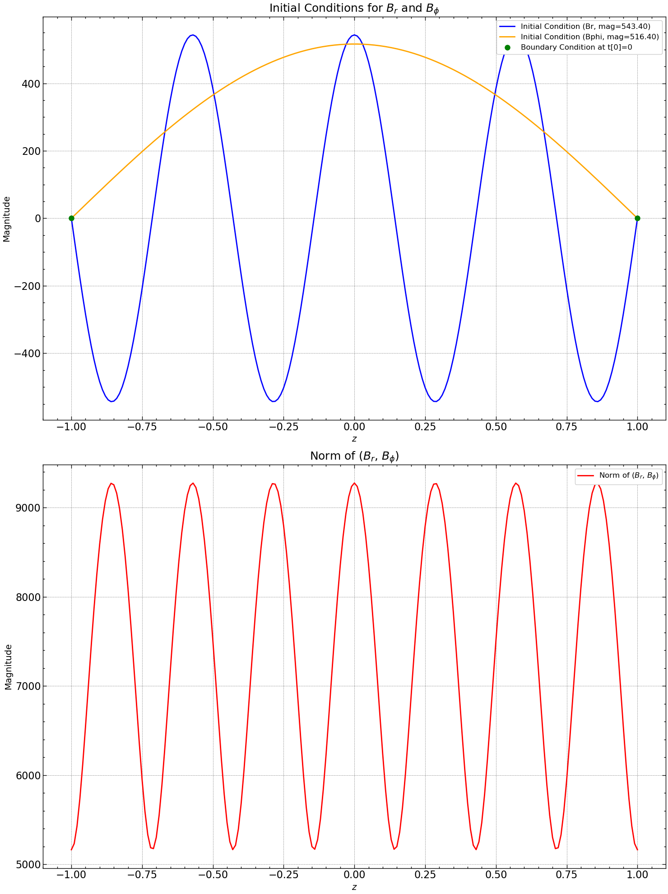

\(\alpha \Omega\) Dynamo Simulation#
We adopt the simplest approximation to the mean field dynamo equations, considering it as a flat rotating thin disc. This implies that \(\epsilon = \frac{h_o}{R_o} \ll 1\), allowing us to neglect all terms involving \(\epsilon^2\) along with any radial derivatives associated with it. Under this approximation, we seek a local solution in \(z\) for specific values of \(\phi\) and \(r\).
Here, the parameters \(S\) is the shear rate defined as \(r \partial \Omega / \partial r\) and for flat rotation curve is equal to \(- \Omega\), where \(\Omega_{0}\) and \(S_{0}\) are there value at \(r = R_o\). For the \(\alpha\)-coefficient, it has its function dependence as \(\alpha \simeq l_{0}^{2} \Omega / h_{0}\).
Parameter Functional Dependence
Here, q is defined as \( - \frac{\partial ln \Omega}{\partial ln r} \) and for flat rotation curve curve i.e \(\Omega \propto \frac{1}{r}\), \(q\) is found to be 1. Thus finally, the Dynamo number is defined as
Setting up the Simulation#
For the purpose of simulation, we will essentially treat all the parameters as constants and obtain the local solution to the dynamo problem. We expect that for \(|D| > |D_c|\), i.e., the critical dynamo number, we will obtain exponentially increasing solutions. The key idea here is to find \(B_r\) and \(B_\phi\) for all times, and for the parameters where we first observe increasing solutions, we determine our critical dynamo number. Additionally, we identify the radial positions on the discs where this possibility occurs.
Boundary conditions#
At the disc surface \(z = \pm h\), where \(h\) is the half-thickness of the disc, we assume electromagnetic vacuum outside the disc, denoted by \(\eta_t \rightarrow \infty\) at \(|z| > h\). Consequently, mean electric currents vanish outside the disc, implying \(\nabla \times \overline{\boldsymbol{B}} = 0\) for \(|z| > h\). As a result, the large-scale magnetic field around the disc is potential, represented by \(\bar{B} = \nabla \Phi(\boldsymbol{r})\). In an axially symmetric system, \(\Phi\) must be independent of \(\phi\), leading to \(\bar{B}_{\phi} = 0\) and \(\bar{B}_{r} = \partial \Phi / \partial r\) for \(|z| > h\). Neglecting derivatives of \(\Phi\) with respect to \(r\), we find \(\bar{B}_{r} = 0\) for \(|z| > h\).
The boundary conditions at \(|z| = h\) are derived from matching the magnetic field inside the disc to the outer solution. Assuming no electric current sheets, \(\bar{B}_{r}\) and \(\bar{B}_{\phi}\) must be continuous at \(|z| = h\), leading to the boundary conditions:
These boundary conditions are exact for the first condition due to axial symmetry and the potential structure of the outer magnetic field. The second condition is approximate and becomes more accurate as the disc becomes thinner. These boundary conditions are known as the vacuum boundary conditions.
The local dynamo equations in \(z\) take the form:
with the boundary conditions:
where \(h = 1\) is the dimensionless local half-thickness of the disc, and both \(h(r)\) and \(S(r)\) are absorbed into the local dynamo number \(D_{\mathrm{L}}\), a function of \(r\) (and possibly \(\phi\)).
This formulation represents a one-dimensional boundary value problem in \(z\) with the eigenvalue \(\gamma\) and eigenfunction \(\mathcal{B}\), which depend parametrically on \(r\) and \(\phi\) when \(\alpha\) and \(D_{\mathrm{L}}\) depend on these variables.
Eigenmodes with Boundary Condtions#
We are dealing with coupled second-order ordinary differential equations (PDEs) with “constant” coefficients. We will recycle the general solution for diffusion equation i.e linear combination of sine and cosine functions due to the homogeneity and isotropy of the problem. Thus, the general form of \(B_r\) and \(B_\phi\) would be:
where \(A_r\), \(B_r\), \(A_\phi\), and \(B_\phi\) are constants to be determined based on initial or boundary conditions.
The parameter \(\gamma\) determines the decay rate of the magnetic field in time. Its value depends on the physical properties of the system and the boundary conditions.
Vacuum Boundary condtion:
For this boundary condition the analytical solution will be the following:
Neumann Boundary condtion:
For this boundary condition where at boundary the spatial derivative is \(0\), then the analytical solution will be the following:
Results#
We have solved the dynamo equation in z with the original eigenmodes of diffusion equation as the initial condition. We have have generated \(B_r^o\) and \(B_\phi^o\) using \(\text{seed} = 100\).
Parameters for the simulation
Parameter |
Value |
|---|---|
\( R_o \) |
20 |
\( h_o \) |
1 |
\( \alpha_0 \) |
10 |
\( \Omega_0 \) |
10 |
\( \eta_t \) |
1 |
\( q \) |
1 |
Initial Condition#

We ran a routine to find the critical dynamo number \(D_c\) where \(D\) and other relevant parameters were varying with \(r\). And we found that at \( r = 6.9354\), B values start increasing with time for all time indices.
Parameter |
Value |
|---|---|
\( l \) |
0.9999 |
\( a \) |
0.7209 |
\( b \) |
0.0079 |
\( D_c \) |
-0.1039 |
Thus, critical dynamo number for the above system came out to be \(D_c = 0.1039\).
Simulation @ \(|D| \gt |D_c|\)#

Variation of \(B_r\), \(B_\phi\), \(B_\text{norm}\) and pitch angle \(\theta\) with time.

This plot shows that the magnetic field decays till \(t = 0.01\) sec and then increases after that. Both rates approach the growth rate, suggesting a critical point in the system. The right side of \(t=0.01\) secs suggest exponential growth in the system after that point.
Simulation @ \(|D| \lt |D_c|\)#

Variation of \(B_r\), \(B_\phi\), \(B_\text{norm}\) and pitch angle \(\theta\) with time.

The plot on the right demonstrates a magnetic field decay characterized by a slope or rate akin to the specified (de)growth rate. Meanwhile, the plot on the left illustrates a magnetic field decay until \(t = 0.02\) seconds, followed by a subsequent increase. Notably, both rates converge toward the growth rate, indicating a critical juncture within the system.